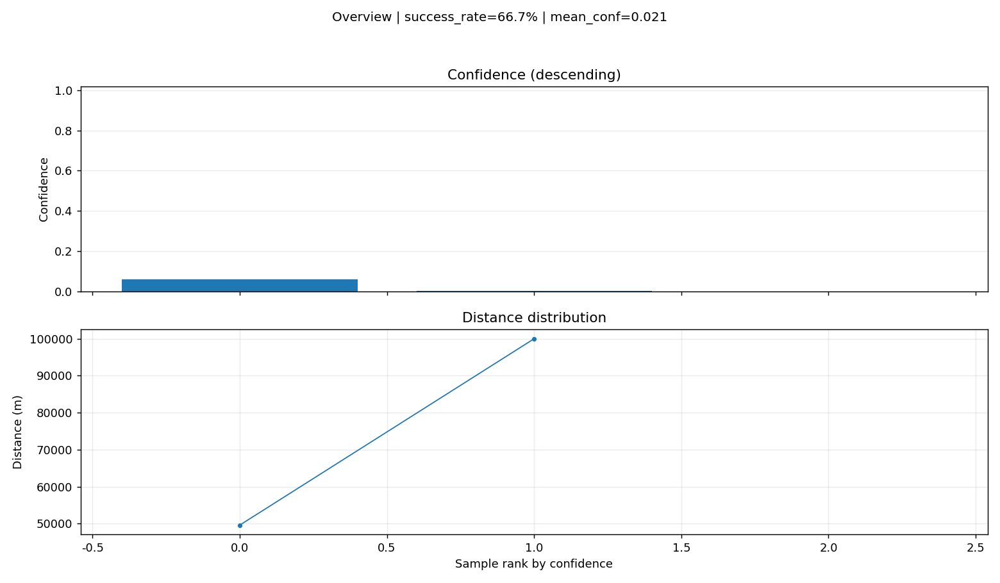
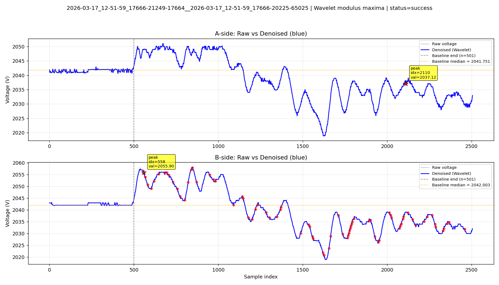
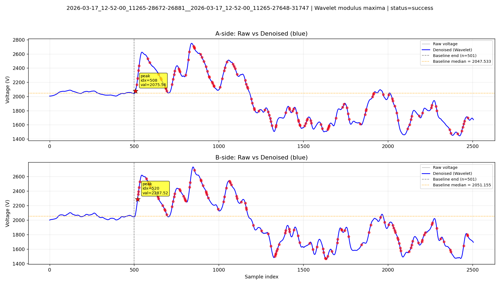
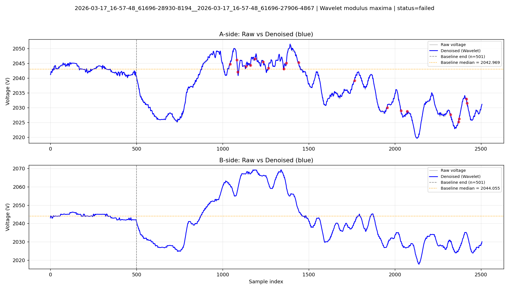

算法：小波模极大值法（专利 CN120275771A）
严格模式：启用
小波层数: 4 | 差分阈值倍数: 0.2
总配对数: 3 | 成功配对数: 2
最佳结果: {'best_pair_name': '2026-03-17_12-52-00_11265-28672-26881__2026-03-17_12-52-00_11265-27648-31747', 'best_A_file': '2026-03-17_12-52-00_11265-28672-26881.csv', 'best_B_file': '2026-03-17_12-52-00_11265-27648-31747.csv', 'best_method_used': 'wavelet_modulus_maxima', 'best_distance_m': 49600.95011876484, 'best_confidence': 0.05841639709602682, 'best_onset_a': 508, 'best_onset_b': 520, 'best_extreme_type_a': 'peak', 'best_extreme_type_b': 'peak'}

success=True | distance_m=100000.0 | confidence=0.0033805060995087295 | reason=
A onset=2110 (peak) | B onset=558 (peak) | Δt=0.000368646080760095

success=True | distance_m=49600.95011876484 | confidence=0.05841639709602682 | reason=
A onset=508 (peak) | B onset=520 (peak) | Δt=-2.850356294536817e-06

success=False | distance_m=None | confidence=0.0 | reason=B端未检测到满足条件的极值点
A onset=1044 (peak) | B onset=None (None) | Δt=None
